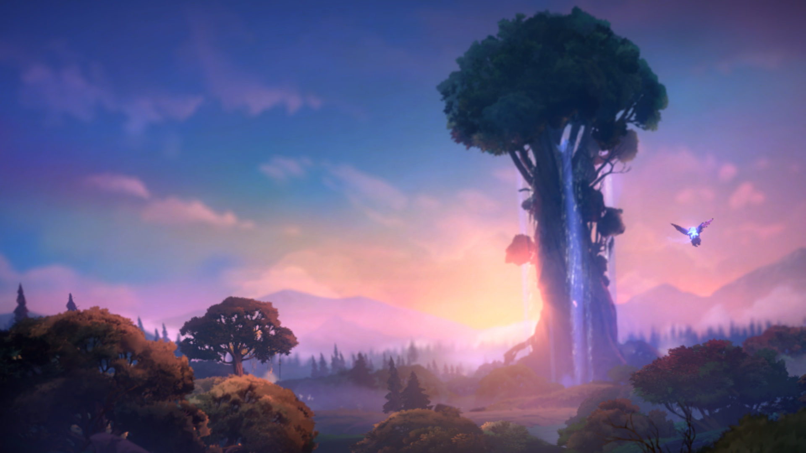
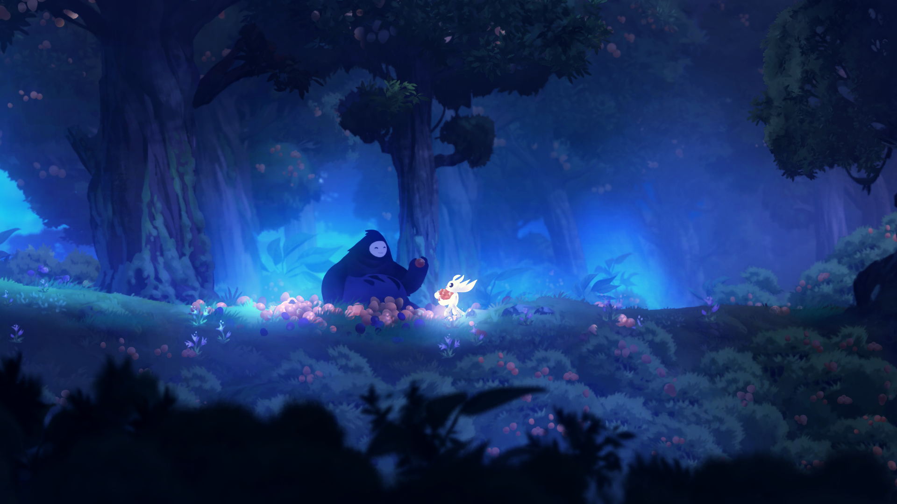
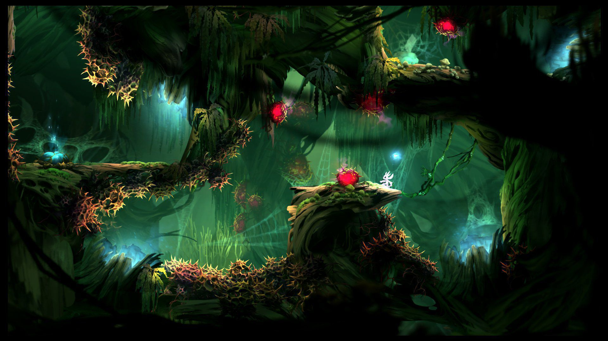

Ori and the Will of the Wisps
Video Trailer

- 
- 
- 
Ori and the Will of the Wisps
Ori and the Will of the Wisps es un videojuego del género aventura-plataforma y Metroidvania desarrollado por Moon Studios y publicado por Xbox Game Studios para Microsoft Windows, Xbox One y Nintendo Switch. Es una continuación del título de 2015 Ori and the Blind Forest y fue anunciado durante el E3 2017. Su lanzamiento se produjo el 11 de marzo de 2020.1
No es la primera vez que el pequeño Ori se enfrenta al peligro, pero cuando un vuelo desafortunado ponga en riesgo a la buhita Ku, va a hacer falta algo más que valor para volver a reunir a una familia, sanar una tierra asolada y descubrir el verdadero destino de Ori. Llega la esperada secuela de los creadores del aclamado juego de acción y plataformas Ori and the Blind Forest. Embárcate en una aventura totalmente nueva dentro de un inmenso mundo repleto de nuevos amigos y enemigos que cobran vida gracias a un impecable trabajo de diseño artesanal. Con una banda sonora original totalmente orquestada, Ori and the Will of the Wisps es fiel a la tradición de Moon Studios de crear acción de plataformas al detalle con una historia que profundiza en las emociones.